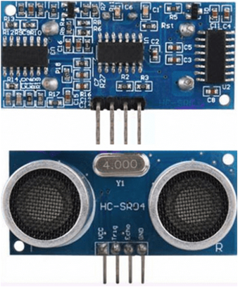

ARDUİNO İLE MESAFE SENSÖRÜ
HC-SR04 Ultrasonik Sensör Sonar
Hc-sr04 Ultrasonik sensör sonar (Sound Navigation and Ranging ) iletişim kullanarak karşısındaki nesneye olan mesafeyi hesaplayan bir kaynaktır. Sonar dediğimiz sistem ses dalgalarını kullanarak cismin uzaklığını hesaplamamıza yardımcı olur. Bu tür sensörlerin esin kaynağı yunuslar ve yarasalardır. Yunuslar ve yarasalarda ses dalgası göndererek karşısına çıkabilecek engellerin mesafelerini hesaplayabilmektedirler.
|  | Hc-sr04 sensörümüzün 4 adet bacağı bulunmaktadır, bunlar: Vcc = 5v kaynağı. Gnd = Topraklama bacağı. Trig = Sensörün ses dalgası gönderen kısmı. Echo = Gönderilen ses dalgasını alan kısmı. Hc-sr04 sensörümüz 5v elektrik akımı ile çalışmaktadır. En verimli ölçüm yaptığı mesafe 2-200 cm arasındadır. 200 cm’den fazla mesafelerde verimli bir şekilde ölçüm yapmamaktadır. |
Hc-sr04 Ultrasonik Mesafe Sensörü Nasıl Çalışır ?
Hc-sr04 ultrasonik mesafe sensörü zaman diagramı aşağıda gösterilmektedir. Ölçümün başlaması için Trig pini en az 10 uS de +5V almalıdır. Böylelikle sensörden 40 kHZ’de 8 devir ses dalgası dışarıya iletilir ve yansıması beklenir. Hc-sr04 alıcıdan sesl dalgasını aldığında Echo pini 0V dan 5V a geçer ve mesafeyle orantılı bir süre bekler. Biz burda Echo pinindeki genişliği ölçerek , aradaki mesafeyi elde edebiliriz.
Zaman = Echo pin genişliği , uS (mikro saniye)
- Cm cinsinden mesafe = Zaman / 58
- İnç cinsinden mesafe = Zaman / 148